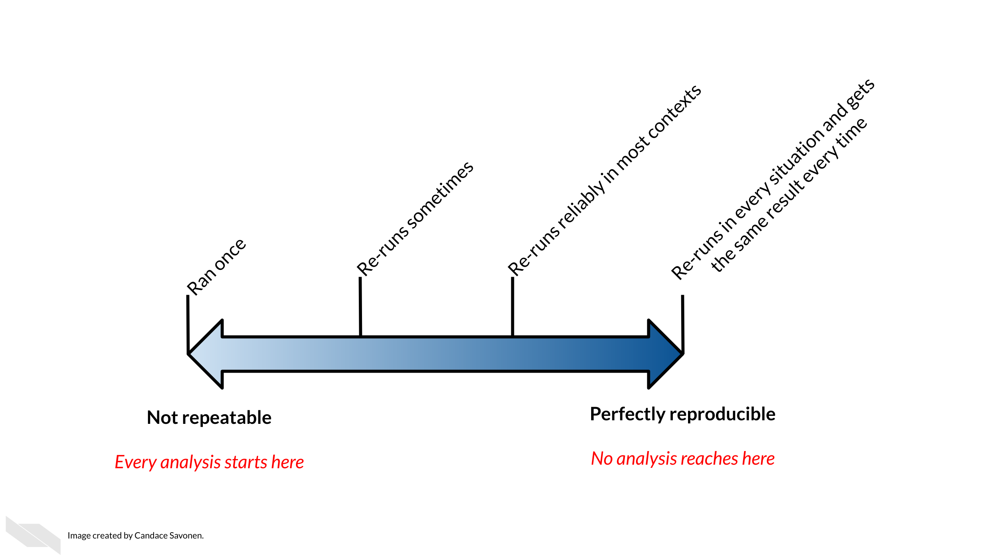

Wrap up
UM Bioinformatics Core
We hope you now have more familiarity with key patterns, approaches, and tools that can enable more computational reproducibility in your research. Please remember that reproducibility exists on a continuum:
 Sourced from Advanced Reproducibility in Cancer Informatics / The Johns Hopkins Data Science Lab —
Housekeeping
Please take our optional post-workshop survey. (5-10 minutes)
We will email you a link to the final session recordings by end of next week.
The website/notes for this workshop will be available.
The UM Bioinformatics Core Workshop Slack content will be available for 90 days.
Looking ahead
Workshop environment
This Great Lakes account will will be available to you until 12/15/2024. Following that, you will be removed this account and any content inside the workshop Turbo or DataDen will be removed.
You can download files from your workshop home dir using your terminal/command line window as below. (You will need to substitute your actual uniqname and type your password when prompted.)
mkdir computational-reproducibility-workshop cd computational-reproducibility-workshop scp -r greatlakes-xfer.arc-ts.umich.edu:/nfs/turbo/umms-bioinf-wkshp/workshop/home/YOUR_USERNAME .Please keep in mind that this workshop environment is optimized for the exercises in this partcular workshop but is likely unsuitable for analyzing your own datasets. In particular:
It is not sized for compute intensive operations or large storage.
It is not secured for sensitive data of any kind.
Continued learning and support
Making research reproducible is a learning process.
UM resources
- UM CoderSpaces office hours and Slack workspace.
- Great Lakes user guide.
- Great Lakes cheatsheet.
- Upcoming UM Advanced Research Computing workshops.
- Videos on getting started with Great Lakes.
External resources
- Lessons and workshops in Bash / Git / R / Python : Software Carpentry and the UM Software Carpentry Group.
- Advanced Reproducibility in Cancer Informatics from The Johns Hopkins Data Science Lab.
- Alston et al. 2020. A Beginner’s Guide to Conducting Reproducible Research. Bull Ecol Soc Am 102(2):e01801. https://doi.org/10.1002/bes2.1801 .
- Essawy et al.A taxonomy for reproducible and replicable research in environmental modelling, Environmental Modelling & Software, Volume 134, 2020, https://doi.org/10.1016/j.envsoft.2020.104753 .
- Guide to Reproducibility in Science.
Thank you

Thank you to/from the workshop team
 |
 |
 |
|
|---|---|---|---|
| Chris | Marci | Travis | |
 |
 |
 |
|
| Dana | Raymond | Clair |
Thank you for participating in our workshop. We welcome your questions and feedback now and in the future.
Bioinformatics Workshop Team